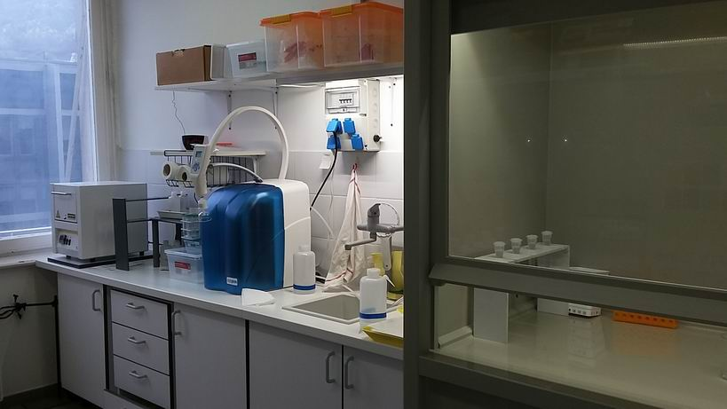

Kutatók
- Ruszkiczay-Rüdiger Zsófia (PhD, csoportvezető)
Technikusok
A helyben keletkező kozmogén izotópos minta-előkészítő laboratórium kialakítása Intézetünkben 2013-ban kezdődött meg. 2014 és 2015 során a laboratórium felkészült kvarc tartalmú kőzet- és üledék-minták helyben keletkező kozmogén 10Be és 26Al koncentrációjának gyorsító tömegspektrométeres (AMS) méréséhez történő előkészítésére.
A litoszférában helyben keletkező kozmogén izotópok - egy geokronológiai módszer a negyedidőszak földtani és geomorfológiai kutatásában
A litoszférában helyben keletkező kozmogén izotópos (Terrestrial in situ produced Cosmogenic Nuclides, TCN) módszer alkalmas kőzetfelszínek, üledékek, valamint jellegzetes felszínformák kitettségi korának, betemetettségi korának és lepusztulási rátájának meghatározására. A módszer sokoldalúan alkalmazható 102-106 éves időtartományban, változatos litológiai feltételek mellett. A teljes negyedidőszakot és pliocént lefedi, így az elmúlt évtizedek műszeres fejlesztéseinek nyomán ma már a negyedidőszak kutatás geokronológiai eszköztárában alapvető szerepet játszik. A földtani és felszínalaktani kutatásokban legelterjedtebb helyben keletkező kozmogén radioaktív izotópok a 10Be (t1/2 : 1,387 Ma), az 26Al (t1/2: 708 ka), a 36Cl (t1/2: 301 ka), és a 14C (t1/2: 5730 a). Ezek mellett két stabil nemesgáz, a 3He és a 21Ne, alkalmazása is jelentős. A radioaktív izotópok koncentrációja 3-4 felezési idő elteltével egyensúlyba kerül, ami meghatározza a módszer alkalmazhatósági tartományát.
A módszerről bővebben: Gosse and Phillips (2001); Dunai (2010); Granger et al. (2013); és magyar nyelven: Ruszkiczay-Rüdiger (2004).
Kitettségi kor meghatározás
A kitettségi kor az az időtartam, amit a kőzet a kozmikus sugárzásnak kitett helyzetben eltöltött. A mért TCN koncentráció alkalmas a vizsgált felszínforma kialakulási idejének meghatározására (1) ha a vizsgált felszínforma kialakulása pillanatszerű az azóta eltelt időhöz képest és (2) ha kialakulása után nem érte számottevő lepusztulás vagy üledék felhalmozódás. Gyakori példák glaciális felszínformák, folyóteraszok és lávafolyások kitettségi korának meghatározása.
Lepusztulási ráta meghatározá
Amennyiben a vizsgált kőzetfelszín egyenletesen pusztul, a felhalmozódó TCN koncentrációja bizonyos idő elteltével szekuláris egyensúlyba kerül. Az egyensúlyi koncentráció annál kisebb, minél gyorsabb a lepusztulás. Ilyen esetben a TCN koncentráció a lepusztulási ráta kiszámítására használható. Alkalmazható fedetlen vagy talajjal fedett felszínek lepusztulási rátájának közvetlen meghatározására és teljes vízgyűjtők átlagos lepusztulásának számszerűsítésére.
Betemetődési kor meghatározás
Ellentétben a kitettségi kor és eróziós ráta meghatározásával, a betemetődési kor meghatározása a radioaktív kozmogén izotópok bomlásán alapul. Vagyis, egykor a kozmikus sugárzásnak kitett helyzetű, de azóta betemetődött kőzetek és üledékek mintázhatók és a betemetődés (kozmikus sugárzástól való leárnyékolás) időpontja datálható olyan kozmogén izotóp-párok használatával, melyek felezési ideje eltérő. Klasszikus példa a barlangi üledékek datálása 26Al/10Be izotóp-párral.
Hazai alkalmazások
A Dunántúli-középhegységet átszelő egyetlen folyó a Kárpát-medence vízhálózatának gerincét jelentő Duna. A Dunántúli-khg. tengelye felé közelítve a folyóteraszok híven őrzik az egyes völgyszakaszok növekvő mértékű kiemelkedését. A függőleges kéregmozgások számszerűsítéséhez, a klimatikus és szerkezeti hatások idejének megismeréséhez, valamint e tényezők elkülönítéséhez a folyó több szakaszán numerikus kor-adatokra van szükség. A kozmogén izotópok első hazai alkalmazása a Dunakanyar sziklateraszainak kozmogén 3He izotópos kitettségi kor meghatározása volt (Ruszkiczay-Rüdiger et al., 2005). E munka folytatásaként a Duna Győr-Tatai szakaszán található felhalmozódási teraszok kor- és lepusztulási ráta meghatározása 10Be izotópos mélységprofilokkal arra utal, hogy a folyó bevágódása feltehetőleg a középső-pleisztocén klíma-átmenet során (1,2-0,7 Ma) megkezdődhetett (Ruszkiczay-Rüdiger et al., 2016a). A Gerecse-hegység folyóteraszinak mélységprofilos kitettségi kor és betemetettségi kor meghatározása, az alacsony teraszok lumineszcens kormeghatározásával kombinálva a térség Duna teraszainak a korábbiaknál részetsebb és pontosabb kronológiai besorolását tette lehetővé (Ruszkiczay-Rüdiger et al., 2018).
Hazánk negyedidőszaki üledékeinek és felszínformáinak tanúsága szerint a folyóvízi erózió mellett - mely napjainkban a legjelentősebb felszínalakító tényező - a széleróziónak is igen jelentős felszínalakító hatása lehetett. A szél általi felszínformálás jelentőségét igazolják a Balaton-felvidék szélcsiszolta kőzetfelszínein végzett 10Be izotópos kormeghatározások. E munka lehetővé tette a szélerózió számszerűsítését helyi és regionális léptékben az utolsó 1,5 millió év során (Ruszkiczay-Rüdiger et al., 2011).
A Retyezát-hegységben (Déli-Kárpátok, Románia) az utolsó eljegesedés visszahúzódásához köthető felszínformák helyben keletkező kozmogén 10Be izotópos kormeghatározása alapján elmondható, hogy az terület utolsó eljegesedési maximuma (~21 ka) egybeesett a globális eljegesedési maximummal. Ezt a későglaciális során legalább 4 jég-visszahúzódási fázis követte. Az utolsó gleccserek ~13.5 ezer évet követően tűnhettek el a térségből, ennél fiatalabb eljegesedésre utaló nyomot egyelőre nem találtak a területen (Ruszkiczay-Rüdiger et al., 2016b).
Új kutatási program: "A Balkán-félsziget negyedidőszaki fejlődéstörténetének vizsgálata glaciális és barlangi képződmények geokronológiai adatai alapján Macedóniában" (GeCosMa) NKFI FK 124807 (2017-2021).
Irodalom
- Dunai, T.J. 2010. Cosmogenic Nuclides. Principles, Concepts and Applications in the Earth Surface Sciences. Cambridge Univ Press, New York, p. 187.
- Gosse, J.C. and Phillips F.M. 2001. Terrestrial in situ cosmogenic nuclides: theory and application. Quaternary Science Reviews, 20. pp. 1475-1560.
- Granger, D.E., Lifton, N.A., Willenbring, J. 2013. A cosmic trip: 25 years of cosmogenic nuclides in geology. GSA Bulletin, 125, 1379-1402. Ruszkiczay-Rüdiger, Zs. 2004. Kitettségi kor és eróziós ráta meghatározásának módszere helyben keletkező kozmogén izotópokkal. Földt. Közl. 134/2. pp. 257-279.
- Ruszkiczay-Rüdiger, Zs. , Dunai, T.J., Bada, G., Fodor, L., Horváth, E. 2005. Middle to late Pleistocene uplift rate of the Hungarian Mountain Range at the Danube Bend (Pannonian Basin) using in situ produced 3He. Tectonophysics, 410. 1-4. pp. 173-187.
- Ruszkiczay-Rüdiger, Zs., Braucher, R., Csillag, G., Fodor, L., Dunai, T.J., Bada, G., Bourlés, D., Müller, P. 2011 Dating pleistocene aeolian landforms in Hungary, Central Europe, using in situ produced cosmogenic 10Be. Quaternary Geochronology, 6, pp. 515-529.
- Ruszkiczay-Rüdiger, Zs., Braucher, R., Novothny, Á., Csillag, G., Fodor, L., Molnár, G., Madarász, B., & ASTER Team, 2016a. Tectonic and climatic forcing on terrace formation: coupling in situ produced 10Be depth profiles and luminescence approach, Danube River, Hungary, Central Europe. Quaternary Science Reviews 131, 127-147.
- Ruszkiczay-Rüdiger, Zs., Kern, Z., Urdea, P., Braucher, R., Madarász, B., Schimmelpfennig, I., ASTER Team 2016b. Revised deglaciation history of the Pietrele- Stânişoara glacial complex, Retezat Mts, Southern Carpathians, Romania. Quaternary International, 415, 216-229. doi:10.1016/j.quaint.2015.10.085
- Ruszkiczay-Rüdiger, Zs. , Csillag, G., Fodor, L., Braucher, R., Novothny, Á., Thamó-Bozsó, E., Virág, A., Pazonyi, P., Timár, G., ASTER Team 2018. Integration of new and revised chronological data to constrain the terrace evolution of the Danube River (Gerecse Hills, Pannonian Basin). Quaternary Geochronology 48, 148-170.
Az új minta előkészítő laboratórium bemutatása


Laboratóriumunk alkalmas kvarc-tartalmú kőzet- és üledék-minták helyben keletkező kozmogén 10Be és 26Al koncentrációjának gyorsító tömegspektrométeres (AMS) méréséhez történő előkészítésére. A földtani kutatásokban leggyakrabban használt helyben keletkező kozmogén izotóp a 10Be. Népszerűségének fő oka (1) a cél-ásvány, a kvarc gyakori előfordulása, (2) alacsony természetes 9Be koncentrációk, (3) szabványos kémiai feltáró folyamat, (4) jó AMS pontosság, (5) a mélységgel viszonylag egyszerűen változó keleletkezési ráta. A helyben keletkező kozmogén 26Al-ot leggyakrabban a 10Be-mal használják párban. E két izotóp koncentrációja az együttes minta-előkészítést követően ugyanazon a kőzetmintán mérhető. Emellett a 26Al-10Be izotóp-pár uralkodó szerepének fő oka egyrészt a 26Al/10Be keletkezési ráta relatíve pontos ismerete valamint a két izotóp jelentősen eltérő felezési ideje. Leginkább betemetődési kor - meghatározásra illetve komplex kitettségi történetek megoldására használják.
Minta előkészítés helyben keletkező kozmogén izotópos 10Be és 26Al méréshez
A minta-előkészítő labor kiépítése 2013 őszén kezdődött meg, kiépítése 2014-2016 során megtörtént. A labor két helyiségében a minta-előkészítés 2 fázisának független ütemezése, valamint a "tiszta labor" a helyben keletkező kozmogén 10Be és 26Al szeparálásának megfelelő feltételeket biztosítja. 2014-2015-ben a kőzetek törése a kvarc tisztítása és maratása történt meg a laborunkban két helyben keletkező kozmogén 10Be izotópos mintasorozaton, és a kozmogén izotópok szeparálása a gyorsító tömegspektrométeres mérések (AMS) helyszínén a franciaországi CEREGE LN2C-ben (Aix en Provence) történt (Ruszkiczay-Rüdiger et al., 2016a,b) . 2015-2016-során már lehetővé vált több teszt mintasor teljes előkészítése (Ruszkiczay-Rüdiger et al., 2016; 2017a,b; Neuhuber et al., 2016).
Kőzetminták fizikai kezelése
A beérkező kőzetminták törése/őrlése Intézetünkben 2017. júliustól új beszerzésű (IF-004-2017) Fritsch pofástörővel (Pulverisette 1, Model 2, Premium Line) történik. (Korábban a minták őrlése Retsch BB200 pofástörővel az ELTE TTK Központi Kutató és Műszercentrum Lézerdiffrakciós szemcseelemző laboratóriumában történt).
A minták szitálása Retsch AS200 vibrációs szita-rázógép segítségével a CSFK, Földrajzi Intézet, Kőzet és talajvizsgáló Laboratóriumában
A minták kémiai kezelése
A minták mész és szerves anyag tartalmának eltávolítása után a nem tiszta kvarc anyagú minták esetén kémiai kezelést megelőzően kvarcot nehézfolyadék segítségével elválasztjuk a többi ásványtól (pl. földpátok, nehézásványok, csillámok).
A minták kémiai maratását (HCl-H2SiF6)követően a tiszta kvarcot 9Be hordozó jelenlétében folysavban (HF) feloldjuk. Párologtatást követően a folysavat salétromsavval (HNO3), majd sósavval (HCl) helyettesítjük. A 10Be kinyerése ioncserélő gyanta oszlopokkal történik (Dowex 1x8 és 50Wx8) (Merchel and Herpers, 1999). Az Al és Be hidroxidok 800 °C-on történő hevítésével kapjuk a gyorsító tömegspektrométeres méréshez szükséges tiszta BeO-ot és Al2O3-ot.
Elérhetőség
- Ruszkiczay-Rüdiger Zsófia
- rrzsofi@geochem.hu
- 1112, Budapest, Budaörsi út 45.
Támogatók
A labor felszerelése az OTKA PD 83610 pályázat valamint a Magyar Tudományos Akadémia "Lendület" programjának (LP2012-27/2012) segítségével történt.
Kapcsolatok
- Az 27Al koncentráció meghatározása (26Al mérésre előkészített minták esetén) az ATOMKI Hertelendi Ede Környezetanalitikai laboratóriumában Agilent MP-AE S 4100 műszerrel történik.
- A tiszta BeO és Al2O3 minták 10Be/9Be ill. 26Al/27Al arányának gyorsító tömegspektrométeres (AMS) mérésére Franciaországban (ASTER, the French National Facility, CEREGE, Aix en Provence; Arnold et al., 2010) van lehetőség tudományos együttműködés keretében.
Irodalom
- Arnold, M., Merchel, S., Bourles, D.L., Braucher, R., Benedetti, L., Finkel, R.C., Aumaître, G., Gottdang, A., Klein, M., 2010. The French accelerator mass spectrometry facility ASTER: improved performance and developments. Nuclear Instruments and Methods in Physics Research B 268, 1954-1959.
- Merchel, S., Herpers, U., 1999. An Update on Radiochemical Separation Techniques for the Determination of Long-Lived Radionuclides via Accelerator Mass Spectrometry, Radiochimica Acta 84, 215-219.
- Neuhuber, S., Ruszkiczay-Rüdiger, Zs., Decker, K., Braucher, R., Fiebig, M., Braun, M., Molnár, G., Lachner, J., Steier, J., ASTER Team. 2016. Interlaboratory comparison of sample preparation in Vienna and Budapest by isochron burial dating of Danube terraces. Third Nordic Workshop on cosmogenic nuclide techniques, June 8-10, 2016, Stockholm. 42-43.
- Ruszkiczay-Rüdiger, Zs., Madarász, B., Kern, Z., Braucher, R., Urdea, P. 2016. Late Pleistocene glacier chronology of the Retezat Mts, Romania, Southern Carpathians. Third Nordic Workshop on cosmogenic nuclide techniques, June 8-10, 2016, Stockholm. 47-48
- Ruszkiczay-Rüdiger, Zs., Madarász, B., Kern, Z., Urdea, P., Braucher, R., ASTER Team 2017a. Late Pleistocene deglaciation and paleo-environment in the Retezat Mountains, Southern Carpathians. Geophysical Research Abstracts 18, EGU2017-2755
- Ruszkiczay-Rüdiger, Zs., Neuhuber, S., Decker, K., Braucher, R., Fiebig, M., Braun, M., Lachner, J., ASTER Team 2017b. Isochron burial dating of the Haslau terrace of the Danube (Vienna Basin) and interlaboratory comparison of sample preparation in Vienna and Budapest. Geophysical Research Abstracts 18, EGU2017-6239